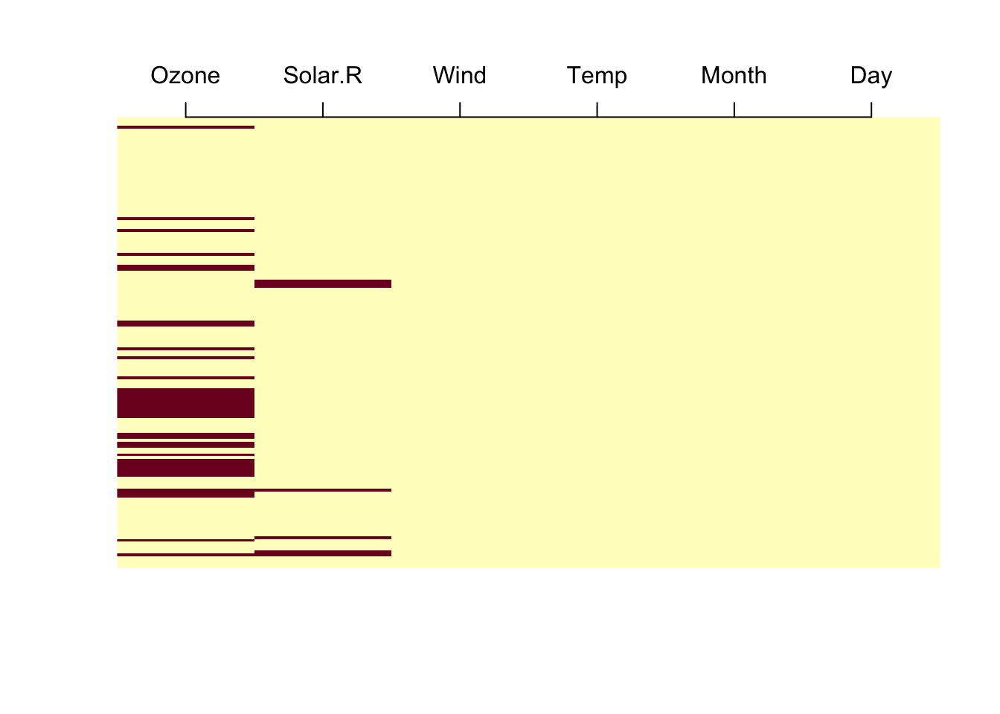

One output of the summary() function that we did not look at in detail in the section on interpreting the fitted model (Section 2.2) is the missing observations. Let’s take this regression for example:
fit =lm(Ozone ~ Wind + Temp, data = airquality)summary(fit)
Call:
lm(formula = Ozone ~ Wind + Temp, data = airquality)
Residuals:
Min 1Q Median 3Q Max
-41.251 -13.695 -2.856 11.390 100.367
Coefficients:
Estimate Std. Error t value Pr(>|t|)
(Intercept) -71.0332 23.5780 -3.013 0.0032 **
Wind -3.0555 0.6633 -4.607 1.08e-05 ***
Temp 1.8402 0.2500 7.362 3.15e-11 ***
---
Signif. codes: 0 '***' 0.001 '**' 0.01 '*' 0.05 '.' 0.1 ' ' 1
Residual standard error: 21.85 on 113 degrees of freedom
(37 observations deleted due to missingness)
Multiple R-squared: 0.5687, Adjusted R-squared: 0.5611
F-statistic: 74.5 on 2 and 113 DF, p-value: < 2.2e-16
The summary() alerts us that “37 observations deleted due to missingness”. So, R has apparently removed observations from the data, but why?
Note
Missing values in R are coded with the special type NA. You can check whether a single variable entry is NA via is.na(). More convenient, however, is to use the summary() function to get an overview about the NAs in your dataset.
The answer is that a standard regression model cannot deal with a missing value in either the response or the predictors. Missing values are very common, however, and to avoid that regressions stop with an error all the time, there is the global R option na.action, which we can see via
options("na.action")
$na.action
[1] "na.omit"
We see that the default in R is “na.omit”, which means that if there is a missing value (NA) in either the response or one of the predictors, the entire observation will simply be omitted. You can change way NAs are handled per model
fit =lm(Ozone ~ Wind + Temp, data = airquality, na.action ="na.fail")
or also globally (careful)
options(na.action ="na.fail")
Setting na.fail means that you will get an error if there are NAs in the data used for your regression. Why would we want this, if the lm conveniently removes all NA lines? Because na.omit is not always a good idea, or at least you want to think about whether it’s a good idea in your case. Possible reasons are:
If you run a model selection (see Chapter 8), na.omit could result in different models having different number of observations (as the inclusion of a variable with NAs would reduce the number of observations)
If you run a model with many variables, each of them with a number of NAs, you might lose a lot of observations and thus power. It may be better to perform an imputation (see Section 6.4).
If missingness is related to the outcome, omitting incomplete rows can bias the estimates (see Section 6.3)
For all these reasons, you should get a good overview about your NAs (see Section 6.2), and consider what to do with them. Silently dropping incomplete rows is common in ecology, although the dangers have been pointed out for a long time (Nakagawa and Freckleton, 2008; Dumelle et al., 2025).
Nakagawa, S. and Freckleton, R.P. (2008) “Missing inaction: The dangers of ignoring missing data,”Trends in Ecology & Evolution, 23(11), pp. 592–596. Available at: https://doi.org/10.1016/j.tree.2008.06.014.
Dumelle, M. et al. (2025) “Missing data in ecology: Syntheses, clarifications, and considerations,”Ecological Monographs, 95(4), p. e70037. Available at: https://doi.org/10.1002/ecm.70037.
6.2 Summarizing NAs
As mentioned in Section 6.1, a quick way to get a summary about the NAs in your data is to run the summary() function, which will return the number of NAs per predictor. You can check this out via running:
summary(airquality)
The problem with the summary is that in regression models, an observation will be removed as soon as one of the predictors has an NA. It is therefore crucial in which combinations NAs occur - we need complete rows. Let’s visualize the position of NAs in the data
image(is.na(t(airquality)), axes = F)axis(3, at =seq(0,1, len =6), labels =colnames(airquality))

We see (dark = NA) that NAs are in Ozone and Solar.R, and sometimes they’re together, sometimes they are separate. To check if you have a complete row, we can use the function complete.cases(), which returns a vector with T/F if a row is complete or not. Here, I check how many complete observations we have
sum(complete.cases(airquality))
To create a dataset with all observations that contain NAs removed, use
airquality[complete.cases(airquality), ]
Note that in general, you should only do this for the variables that you actually use in your regression, else you might remove more observations than needed. Either you select the columns by hand, or a small hack is to use the model.matrix, which allows you to copy/paste the regression formula syntax
After having an overview about the NAs in your data (Section 6.2), as a second step in the analysis (or ideally already during the design of the experiment) is to ask yourself under which process the missingness was created. We distinguish three crucial classes of processes:
MCAR = missing completely at random
MAR = missing at random
MNAR = missing not at random
The easiest case is arguably MCAR = missing completely at random - in this case, the occurrences of NAs in variable X are completely random, and do not depend on X or on any other variable, observed or not. This occurs when the causes of NAs are completely unrelated to the variables in the data. The opposite case is MNAR = missing not at random - in this case, the occurrence of NAs in variable X depends on the unobserved (true) value of X itself, or on other unobserved variables, even after accounting for everything we have observed. In between lies MAR = missing at random - in this case, the occurrence of NAs in variable X depends only on observed variables, not on the missing value of X itself (once we account for the observed variables). For example, an ozone sensor that fails at high wind speeds (Wind is observed) is MAR, while a sensor that fails at very high ozone concentrations is MNAR. See also (Bhaskaran and Smeeth, 2014).
Bhaskaran, K. and Smeeth, L. (2014) “What is the difference between missing completely at random and missing at random?”International journal of epidemiology, 43(4), pp. 1336–1339.
What this means for the analysis:
Mechanism
Complete-case analysis (na.omit)
What to do
MCAR
unbiased, but loses observations and power
complete cases are fine; imputation can recover the power
MAR, depends on predictors in the model
unbiased (if the model is correctly specified)
complete cases are fine (imputation can recover power)
MAR, depends on the response (e.g. NAs in a predictor that are more likely for high values of the response)
use multiple imputation with the variables that predict the missingness in the imputation model, or likelihood methods
MNAR
usually biased
model the missingness process (beyond this book, see van Buuren’s book linked in Section 6.4) or run a sensitivity analysis (Note 6.1)
Note that “observed variables” in the definition of MAR includes the response: MAR does not mean that omitting rows is safe. Whichever you choose, report how many observations were lost, the percentage of NAs per variable, and how they were handled.
6.3.1 Can we find out which mechanism applies?
Only partly. The difference between MAR and MNAR concerns the values we do not see, so it cannot be tested with the data: a pattern of NAs that depends on an observed variable (e.g. older people refuse more often to state their income) looks the same under MAR and MNAR, because we cannot know whether, within the older people, it is the rich who stay silent. MAR is therefore an assumption that you have to justify with knowledge about how the data were generated (a causal question about what produced the NAs, Chapter 7), ideally already when planning the data collection.
What we can check is whether the NAs depend on observed variables: if they do, they are not MCAR. The simplest way is a logistic regression of the missingness indicator (1 if the value is NA, 0 otherwise; this is the response here, not the response of your regression model!) on all other observed variables, including the response of your regression model if the NAs are in a predictor. In airquality, the NAs in Ozone depend on the month:
summary(glm(is.na(Ozone) ~ Wind + Temp + Month, data = airquality, family = binomial))$coefficients
Month has a clear effect, so Ozone is not MCAR (the p-value of Temp is borderline). If any observed variable predicts the NAs, complete-case analysis may be biased (Section 6.3), and these variables should go into the imputation model; if nothing predicts them, MCAR is plausible, but not proven. There are also formal tests of MCAR, e.g. Little’s test (naniar::mcar_test(), which assumes normally distributed variables and is not suitable for categorical data). Note the limits: a significant result shows that the NAs are not MCAR, but cannot tell MAR from MNAR, and a non-significant result is only weak evidence for MCAR (the test has little power if there are few NAs). If MNAR is plausible, do not rely on the imputation alone, but check how much your conclusions change under different assumptions about the missing values (Note 6.1).
6.4 Imputation
The main alternative to throwing out observations with NAs is filling them up. This process is known as imputation.
In the airquality regression above, however, only the response Ozone has missing values; Wind and Temp are complete. Imputing the response is of little use: if only the response is missing (and the missingness is MAR given the predictors), the imputed values are just predictions from the same predictors, so they add no information about the effects. Hippel (2007) therefore recommends to remove observations with imputed responses before fitting the model. The response should, however, be used in the imputation model, to impute missing predictors.
Hippel, P.T. von (2007) “Regression with missing Ys: An improved strategy for analyzing multiply imputed data,”Sociological Methodology, 37(1), pp. 83–117. Available at: https://doi.org/10.1111/j.1467-9531.2007.00180.x.
Imputation pays off when predictors are missing. Let’s create such a situation, in which we also know the correct result: we take the 111 complete observations of airquality and delete values of Temp, more often on days with high ozone. This is MAR, because the missingness depends on the observed Ozone values:
The complete-case analysis is clearly biased: because we mostly lost days with high ozone, the effect of Wind is strongly underestimated. Note that its standard errors are even smaller than for the full data, although we have fewer observations, because the remaining days with low ozone vary less.
Single imputation. A fast and flexible option for imputation is the random-forest-based missRanger package (with pmm.k = 5, each imputed value is drawn from the 5 observed values with the most similar prediction, predictive mean matching):
The imputation removes much of the bias. However, the model treats the imputed values as if they were observed, so its standard errors do not account for the uncertainty of the imputation.
Multiple imputation. Multiple imputation creates several completed data sets with different plausible values, fits the model to each of them and pools the results with Rubin’s rules, so that the imputation uncertainty is reflected in the standard errors. The standard package for this is mice, which, for each imputed data set, also redraws the parameters of the imputation models, so that the variation between the imputations reflects the imputation uncertainty:
The pooled estimates are similar to the single imputation, but the standard errors now include the variation between the imputations (pool(fitMI) also shows the fraction of missing information, fmi, for each coefficient).
Note that running missRanger several times and pooling the results with pool() is a common shortcut, but only an approximate multiple imputation, because the imputation model itself is not re-drawn. Its standard errors therefore tend to be too small.
TipIs this a general result? A small simulation
The example above is a single random deletion of Temp values. Let’s repeat it 100 times and compare the average estimate of the Wind effect with the reference value from the full data:
truth =coef(fitFull)["Wind"]simulateOnce =function(){ aqNA = aq aqNA$Temp[runif(nrow(aq)) <plogis(-1.5+0.04* (aq$Ozone -mean(aq$Ozone)))] =NAc(CC =unname(coef(lm(Ozone ~ Wind + Temp, data = aqNA))["Wind"]),SI =unname(coef(lm(Ozone ~ Wind + Temp,data =missRanger(aqNA, pmm.k =5, verbose =0)))["Wind"]),MI =summary(pool(with(mice(aqNA, m =10, printFlag =FALSE),lm(Ozone ~ Wind + Temp))))$estimate[2])}set.seed(1)estimates =replicate(100, simulateOnce())rowMeans(estimates) - truth # average bias of the Wind estimate
CC SI MI
1.6087617 0.2841732 0.4317337
Across the repetitions, the complete-case analysis is strongly biased, while both imputation methods remove most of the bias.
Note 6.1: Sensitivity analysis: what if the data are MNAR?
Imputation assumes MAR, and this cannot be tested (Section 6.3.1). A common check is a delta adjustment: after each imputation, shift the imputed values by a fixed amount delta that represents a plausible departure from MAR (here: the days with missing Temp were, on average, 5 degrees F cooler or warmer than a MAR imputation predicts, i.e. a negative delta lowers the imputed values). Choose the deltas with expert knowledge about the data collection, see how the pooled estimates change, and ask which shift would be needed to change your conclusion. In mice, this is done with the post argument:
deltas =c(-5, 0, 5)sens =sapply(deltas, function(d){ post =make.post(aqNA) # post-processing rules: here, shift each imputed Temp value by d post["Temp"] =paste0("imp[[j]][, i] <- imp[[j]][, i] + ", d) impD =mice(aqNA, m =20, method ="pmm", post = post, printFlag =FALSE, seed =1)summary(pool(with(impD, lm(Ozone ~ Wind + Temp))))$estimate[2:3]})dimnames(sens) =list(c("Wind", "Temp"), paste("delta =", deltas))round(sens, 2)
In our simulated data we know that the missingness is MAR, so delta = 0 is the correct assumption. In real data, you do not know this: if the conclusions (here: the size of the Wind and Temp effects) change little over all plausible deltas, they are robust against departures from MAR; if they change a lot, report this uncertainty. In the output, compare the columns: here, the Wind effect moves from about -3.2 to -2.4 across the deltas, while the Temp effect changes little. The estimate at delta = 0 differs from the full-data value (Section 6.4) because of the imputation uncertainty with only 24 missing values; the point is how much the estimates move across the deltas, not which delta happens to be closest. The same logic applies to a response with NAs, by shifting its imputed values. More on this in the chapter on sensitivity analysis in van Buuren’s book (linked below).
By default (na.omit), R drops every row with an NA in the response or in any predictor, and only reports the number of deleted observations in the summary(). Look at the combinations of NAs (complete.cases()), not only at the NAs per variable.
Ask how the NAs were created. Omitting incomplete rows is safe under MCAR, but can bias the estimates (not only reduce power) if the probability of an NA in a predictor depends on the response (MAR) or on the missing value itself (MNAR); if it depends only on other predictors in the model, complete cases stay unbiased.
MAR and MNAR cannot be told apart from the data; only deviations from MCAR can be detected (e.g. logistic regression of the NA indicator on the observed variables). MAR is an assumption that you justify with knowledge about the data collection, and if MNAR is plausible, run a sensitivity analysis.
When you compare models, make sure they use the same observations (e.g. with na.action = "na.fail" or by subsetting to rows that are complete for all variables used), because adding a variable with NAs changes the data.
If predictors have NAs and deleting rows loses many observations or biases the estimates, impute the missing predictors, and use the response in the imputation model. Do not analyze imputed responses.
A single imputation treats imputed values as observed, so its standard errors are too small. Use multiple imputation (e.g. mice) and pool the results with Rubin’s rules; repeating a single imputation and pooling is only an approximation.